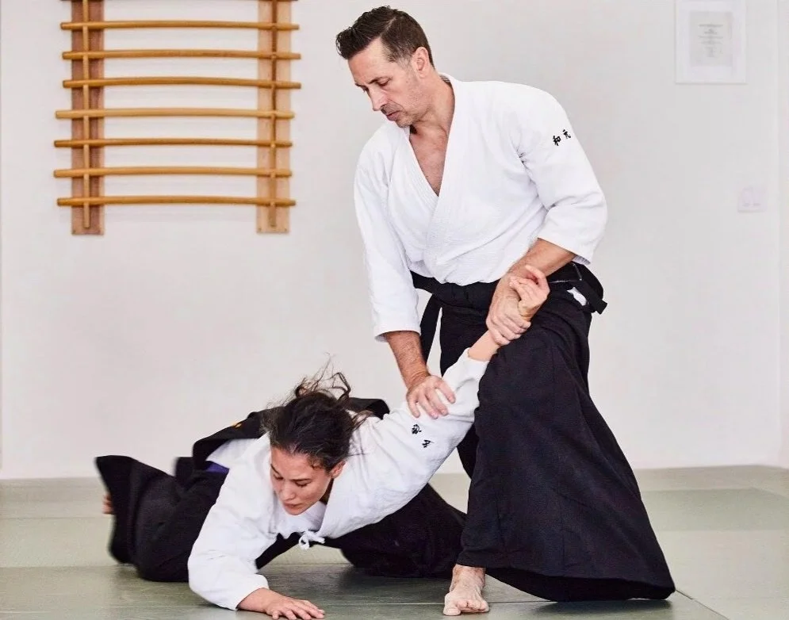
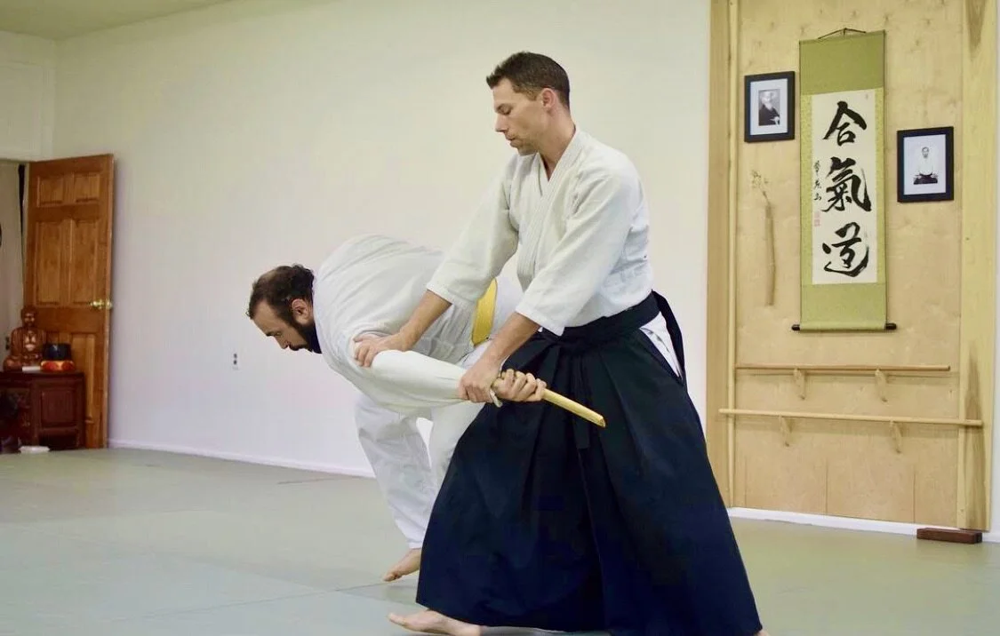
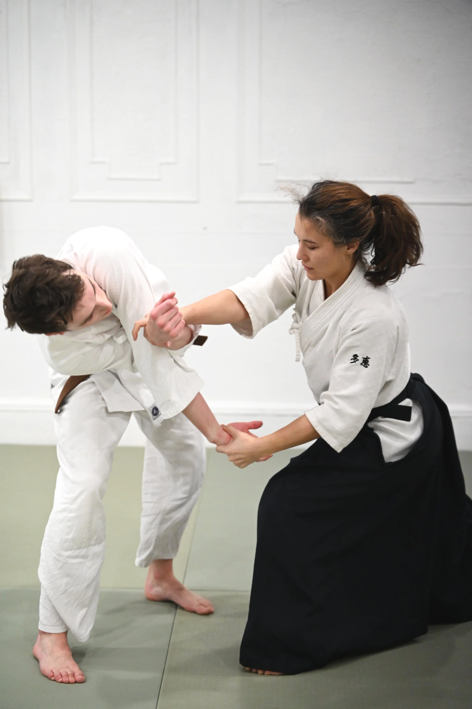
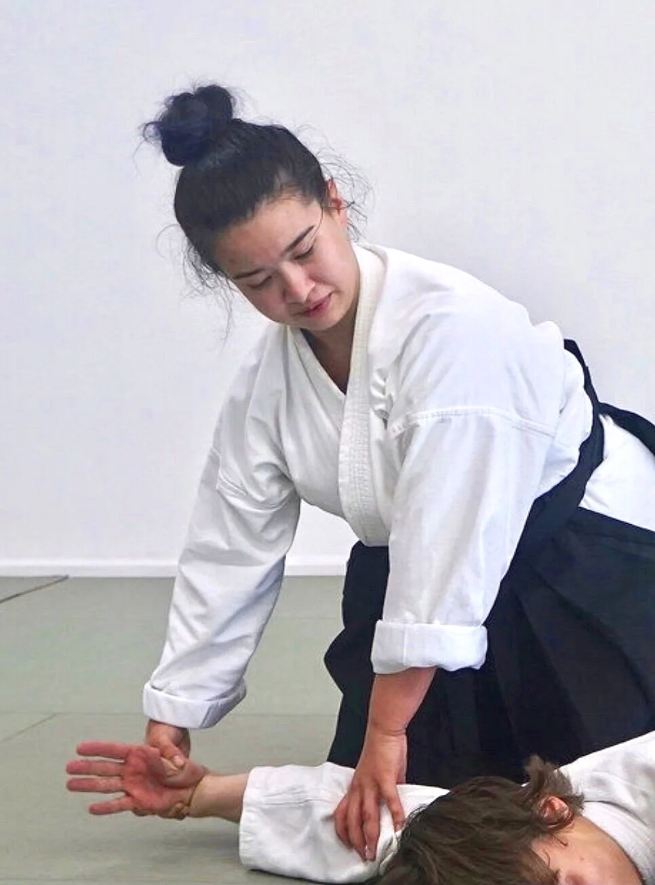
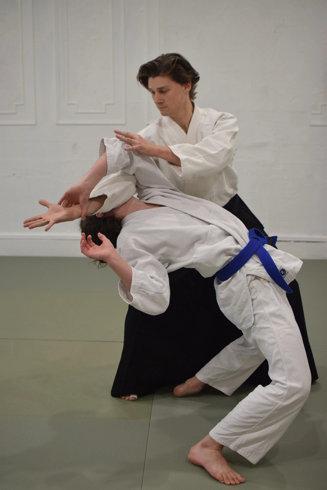

Class schedules, trial sessions, and what to expect on your first day
1
Schedule a Visit
Sign up to schedule your free trial class. Appointments are required - no drop-ins.
2
Arrive Early
Come 15 minutes before class to change clothes, meet instructors, and get oriented.
3
Begin Training
Start with basic movements and gradually learn traditional Aikido techniques with patient instruction.
What to Expect in Your First Class
Warm-up exercises and basic movements
Introduction to Aikido principles and philosophy
Basic techniques with patient instruction
Emphasis on safety and proper form
Traditional dojo etiquette and respect
Time to ask questions and get to know instructors
What to Wear & Bring
For your first class: Comfortable workout clothes (t-shirt and sweatpants)
No shoes: Training is done barefoot on tatami mats
Water bottle: Stay hydrated during training
Open mind: Be ready to learn something new
Uniform: Not required until you decide to continue training
Frequently Asked Questions
What is Aikido?
Aikido is a Japanese martial art that focuses on harmony, blending with an attacker's energy rather than opposing it directly. It emphasizes throws, joint locks, and redirecting force while cultivating mental discipline and spiritual growth.
Do I need a uniform (gi) right away?
No, comfortable workout clothes are fine for your first few classes. Once you decide to continue training, you'll want to purchase a traditional aikido gi (uniform) which we can help you order.
Is Aikido good for self-defense?
Aikido develops practical self-defense skills, but more importantly, it cultivates awareness, confidence, and the ability to remain calm under pressure. The mental aspects often prove more valuable than the physical techniques.
What if I'm not flexible or athletic?
Aikido is suitable for people of various fitness levels. We emphasize proper technique over strength or flexibility. Many students find that their flexibility, balance, and fitness improve naturally through consistent practice.
"Out of responsibility and love, we maintain traditional honor standards. How we train defines who we become."
"Traditional Teacher-Student Relationship"
We honor the traditional sensei-student relationship that has preserved martial arts for centuries.
Our instructors provide demanding yet supportive guidance, maintaining proper rei (礼 - respect) while fostering growth through disciplined training.
The principles we practice on the mat extend far beyond the dojo walls.
We cultivate respect, integrity, and awareness (気づき - kidzuki) that extends beyond the dojo.
Advancement in Aikido comes through consistent effort, not casual participation.
We hold honor standards—some may falter, but those who persevere develop both technical skill and character through the demands of traditional budo training.
Whether seeking stress relief, exploring martial arts, or developing your spiritual practice - discover how Aikido can serve your individual path.
Mindful Movement
Breathing and centering practice through traditional techniques. Students develop awareness through consistent training.
"Training during a difficult loss brought unexpected healing. Sensei's teaching created a sanctuary where grief became strength."
— Aikido Student
Students practice mindful movement and breathing techniques. Each person's journey develops differently through consistent training.
Budo Training
Non-competitive martial arts focused on technique and principle. Students develop physical awareness through traditional practice.
"I expected intense physical training, but found something deeper. The gentle approach builds strength and confidence."
— Aikido Student
Effective for fitness goals, injury prevention, and learning practical self-defense. No prior martial arts experience needed - our instructors specialize in teaching complete beginners with patience and encouragement.
Traditional Study
Japanese budo tradition through direct lineage. Study of movement, philosophy, and traditional forms.
"Five years in, I'm still discovering new depths. The traditional approach reveals layers of understanding through practice."
— Film Student
For spiritual growth, community connection, and cultural learning. Direct transmission from F. Toyoda Shihan, officially recognized by Aikikai Hombu Dojo in Japan.
Dojo Community
Respectful training environment. Practitioners of all levels train together with mutual respect and commitment to learning.
"After training at multiple dojos, Genshinkan feels like home. Everyone is friendly, welcoming, and unpretentious."
— Aikido Student
Welcoming for transfer students seeking quality instruction and supportive community. Diverse skill levels train together with mutual respect and shared commitment to the Way.
Philosophy & Community
Philosophy & Community
哲学と共同体
What makes Genshinkan special - honor-based values and traditional wisdom
Experience the traditional atmosphere of our Aikido dojo in Manhattan's East Village
Our Instructors
指導者
Traditional Aikido passed down through established lineage

Gary Wagener Sensei
Yondan (4th Dan), Chief Instructor/Dojo-Cho
Gary Wagener Sensei is a Yondan (4th degree black belt) Aikikai, recognized by Hombu dojo in Japan and trained in the traditional lineage of F. Toyoda Shihan.
With over two decades of disciplined practice, Sensei Wagener embodies the rigorous dedication required for martial arts mastery. His teaching methodology emphasizes the foundational principles that create lasting change—requiring students to develop understanding through consistent effort rather than seeking superficial results. Through systematic progression and traditional training methods, he guides students toward the integration of martial discipline with spiritual development that defines budo. Beyond the dojo, Sensei Wagener has brought traditional Aikido training to underserved communities, demonstrating his commitment to the art's power to develop character.

Robert Hoff Sensei
Yondan (4th Dan), Instructor
Robert Hoff Sensei is a Yondan (4th degree black belt) Aikikai, recognized by Hombu dojo in Japan, with extensive training under Joseph Jarman Sensei and continued development within the Genshinkan lineage. His progression through the dan ranks reflects years of disciplined practice combining Zen meditation principles with rigorous martial training. Sensei Hoff's teaching approach demands complete mental presence and physical commitment from students, recognizing that Aikido's power emerges only through sustained effort and commitment. His integration of contemplative practice with traditional martial discipline creates an environment where students develop both technical precision and inner stability. As an experienced educator both within and outside the dojo, he understands that learning requires challenge, repetition, and the willingness to confront one's limitations.

Ariana Koblitz Sensei
Nidan (2nd Dan), Instructor
Ariana Koblitz Sensei is a Nidan (second-degree black belt) Aikikai, recognized by Hombu dojo in Japan, having earned her rank through consistent training and demonstrated mastery of traditional techniques. Her progression from beginner to black belt instructor exemplifies the disciplined approach required for martial arts development. Sensei Koblitz's teaching emphasizes that each class demands complete mental engagement—students must be fully present to absorb the technical precision and philosophical depth that Aikido offers. Her instruction methodology focuses on building solid fundamentals through repetitive practice, understanding that lasting skill emerges only through dedicated effort over time. The principles she has internalized through years of traditional training—presence, adaptability, and harmonious response—inform both her martial arts instruction and her professional expertise in design, demonstrating Aikido's practical application beyond the dojo.

Sarah Antal Sensei
Nidan (2nd Dan), Dojo-Cho White Plains
Sarah Antal Sensei is a Nidan (second-degree black belt) Aikikai, recognized by Hombu dojo in Japan, having progressed through the traditional ranking system under the direct guidance of Gary Wagener Sensei.
Her journey from novice to certified instructor demonstrates the power of sustained commitment to traditional martial arts training. Sensei Antal's teaching combines the precision demanded by classical dance with the martial discipline required for serious Aikido practice. She emphasizes that both arts require years of dedicated training to achieve fluency, rejecting shortcuts in favor of thorough technical development. Her instruction methodology ensures students understand that mastery emerges through countless repetitions, attention to detail, and willingness to embrace the discomfort of genuine learning. As both a martial arts instructor and professional dance educator, she embodies the intersection of artistic expression and disciplined training.

Ian Antal Sensei
Nidan (2nd Dan), Chief Instructor White Plains
Ian Antal Sensei is a Nidan (second-degree black belt) Aikikai, recognized by Hombu dojo in Japan, having achieved his rank through intensive traditional training as Gary Wagener Sensei's first Soto Deshi (live-in student).
This formal apprenticeship relationship represents the deepest level of commitment to traditional martial arts education—requiring complete dedication to the art, the teacher, and the daily discipline of traditional budo training. In 2018, Sensei Antal earned the significant honor of opening Genshinkan's first satellite dojo in White Plains, demonstrating his mastery of both technical skills and teaching methodology. His approach to instruction emphasizes that Aikido's apparent contradictions—warrior training combined with peaceful philosophy—can only be resolved through rigorous practice and dedicated study. As Chief Instructor, he maintains the traditional standards and teaching methods that produce genuine martial artists rather than casual practitioners.
Aikido World Alliance
合気道世界同盟
Our formal lineage and connection to traditional Aikido
Genshinkan Aikido, NYC is a member of Aikido World Alliance (AWA)
About Andrew Sato Shihan
AWA Founder & Chief Instructor
Andrew Sato Shihan, 7th dan black belt, is the founder and chief instructor of AWA. He founded AWA in 2005, and the organization has grown to over 50 dojo worldwide.
Sato Shihan began his aikido training in 1977 with Fumio Toyoda Shihan in Chicago. He regularly teaches seminars and at Kiku Matsu Dojo in Chicago (now led by Laura DeGraff Sensei).
Our Traditional Lineage
Understanding and respecting our lineage is fundamental to traditional Aikido practice. We maintain direct connection to our sources through proper protocols.
Founder
Morihei Ueshiba O-Sensei (1883-1969)
Founder of Aikido, "The Way of Harmony"
↓
Aikikai Foundation
Tokyo, Japan - World Headquarters
Official recognition and rank certification
↓
American Transmission
Fumio Toyoda Shihan (1947-2001)
Direct transmission to American students
↓
Current Leadership
Andrew Sato Shihan, 7th Dan
Aikido World Alliance Director
↓
Genshinkan Manhattan
Gary Wagener Sensei, 4th Dan
Dojo-Cho, maintaining traditional values in Manhattan
AWA is directly affiliated with Aikikai Foundation in Tokyo, Japan, maintaining our traditional lineage and ensuring proper instruction standards.
Aikido is budo—the martial way that transforms through disciplined practice
We welcome dedicated students ready for serious practice. Aikido demands consistency,
mental discipline, and fudoshin (不動心 - unshakeable spirit) to confront your limitations. This is not fitness—this is budo.
What Aikido Demands
"The ultimate aim of Aiki is not in victory or defeat, but in the perfection of the human character." — Morihei Ueshiba, Founder of Aikido
"Always practice the Art of Peace in a vibrant and joyful manner." — Morihei Ueshiba
⏰
Regular Practice Required
Aikido develops through repetition and muscle memory. Students who progress train 2-3 times per week minimum.
Occasional attendance yields occasional results.
Reality: You'll be physically tired after keiko (稽古 - training), mentally challenged by complex movements, and humbled by the learning curve.
🧠
Mental Discipline
Beyond physical technique, you'll develop zanshin (残心 - continuing awareness), emotional regulation, and the ability to remain centered under pressure.
This mental training extends far beyond the dojo.
Growth: Developing mushin (無心 - no-mind) - staying calm when thrown, focused when confused, and humble when frustrated.
🌱
Personal Transformation
Aikido will confront your ego, test your patience, and push you beyond your comfort zone.
This training cultivates kokoro (心 - heart/spirit)—real growth happens through discomfort, not in easy moments.
Truth: The students who thrive here are those who embrace challenge as the price of meaningful change.
Are You Ready for This Level of Commitment?
If you're looking for easy, Aikido isn't for you. If you're seeking authentic martial arts training through dedicated practice,
disciplined study, and traditional budo—welcome home.
Students who embrace challenge and commit to growth find their home here
Students who thrive here share certain qualities—not athletic ability or prior experience,
but the mindset and values that align with serious martial arts training.
🎯
The Dedicated Professional
High achievers who appreciate structured learning and measurable progress. They understand that mastery
requires consistent effort over time, not quick fixes or shortcuts.
Thrives because they:
Value systems that produce real results
Respect traditional teaching methods
Appreciate the connection between discipline and excellence
🌱
The Growth Seeker
People willing to invest time and energy in long-term personal development. They're drawn to practices that
develop character, not just physical skills.
Thrives because they:
See challenges as opportunities for development
Value inner transformation over external achievement
Understand that real growth takes time and patience
🏛️
The Serious Student
Those who prefer depth over quick fixes, tradition over trendy fitness. They're seeking something with
substance, history, and proven effectiveness.
Thrives because they:
Appreciate proven lineage and traditional methods
Value quality instruction over convenience
Seek practices with philosophical depth
Does This Sound Like You?
If you're ready to commit to your growth, appreciate traditional teaching, and want to train alongside
others who take their development seriously, you'll find your community here.
Martial arts develop a child's positive sense of self on multiple levels. Aikido's non-combative, non-competitive philosophy means no tournaments - each student progresses at their own pace.
🛡️ Self Defense
Improved balance, energy, and endurance. Learn conflict resolution through harmoniously redirecting energy.
🧠 Self Awareness
Develop patience, discipline, and internal/external balance for daily life.
💪 Self Empowerment
Focus and determined motivation through physical fitness and life skills.
Important: New students must make an appointment with their parent before visiting the dojo.
Manhattan Location: 64 E 4th St, 3rd FL New York, NY
White Plains Location: 98 Lake St White Plains, NY
Students
学生
"Training at Genshinkan during a difficult loss brought unexpected healing. Sensei's teaching created a sanctuary where grief became strength, and vulnerability became power."
— Aikido Student
"I arrived at it after joking that I was so angry at the time. Aikido has changed my life — I use it daily to cultivate calm and resilience."
— Aikido Student
"I had never done any form of martial arts previously. Everyone at the dojo makes it easy to learn and encourages you to do your best without creating a competitive environment."
— Engineering Professional
"I had to relearn what I thought I knew. The teaching style here helped me discover a better understanding while respecting my previous experience. The community is supportive."